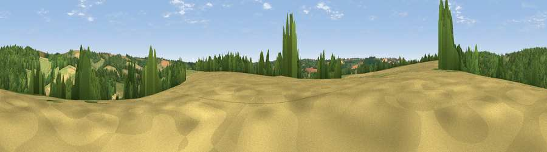

Viewpoint near Linkenholt
#34467 in England · top 66% of its area beats it · near LinkenholtThe view, rendered

A 360° render of this exact spot computed from the terrain model, tree cover and land cover — summer colours, afternoon light, calibrated against photographs of famous viewpoints. Real trees, hedges and buildings will differ in detail.
The panorama
Grey silhouette: terrain skyline in each direction (720 bearings, Earth curvature and refraction included). Dashed green: skyline with trees (+15 m) and buildings (+8 m) as obstacles. Blue strip: how far the ground is visible on each bearing.
Where the view opens
Wedge length = distance to the farthest visible ground on that bearing (vegetation-aware). Rings at 10, 25 and 50 km.
What fills the view
46% woodland · 30% cropland · 25% grassland
Angular shares of the visible panorama (visual magnitude), not map area. Landscape diversity 0.47 (0–1 Shannon).
Key numbers
More beautiful places nearby
The staircase of upgrades: each row has a higher view potential than everything closer. Driving times are estimates from straight-line distance, calibrated against real road routing — check an actual route before setting out.
| Place | Direction | Drive | Score |
|---|---|---|---|
| Viewpoint near Faccombe | E · 3 km | ~7 min | 42.7 |
| Viewpoint near Faccombe | ENE · 3 km | ~7 min | 53.7 |
| Walbury Hill | NNE · 3 km | ~8 min | 70.0 |
| Gallows Down | N · 4 km | ~9 min | 75.6 |
| Beacon Hill | E · 10 km | ~19 min | 76.7 |
| Martinsell viewpoint | WNW · 19 km | ~32 min | 77.3 |
| Viewpoint near Buriton | SE · 52 km | ~74 min | 80.0 |
| Beacon Hill | SE · 60 km | ~83 min | 85.8 |
51.32560, -1.48581 · source: screening · position refined by local search. Computed location — check access rights before visiting.